Tests for checking Batch Effects
| Batch @K00118 | Batch @K00216R | Batch @K00342 | Batch @K00346 | Batch @K00350R | |
|---|---|---|---|---|---|
| Condition NegativeNegativeNegative | 3 | 11 | 0 | 8 | 0 |
| Condition NegativeNegativePositive | 4 | 3 | 0 | 2 | 0 |
| Condition NegativePositiveNegative | 3 | 6 | 0 | 3 | 1 |
| Condition NegativePositivePositive | 0 | 3 | 1 | 0 | 0 |
| Condition PositiveNegativeNegative | 0 | 0 | 1 | 1 | 0 |
| Condition PositiveNegativePositive | 0 | 1 | 0 | 1 | 0 |
| Condition PositivePositiveNegative | 5 | 10 | 2 | 7 | 2 |
| Condition PositivePositivePositive | 0 | 1 | 0 | 4 | 0 |
| Standardized Pearson Correlation Coefficient | Cramer’s V | |
|---|---|---|
| Confounding Coefficients (0=no confounding, 1=complete confounding) | 0.6016 | 0.3192 |
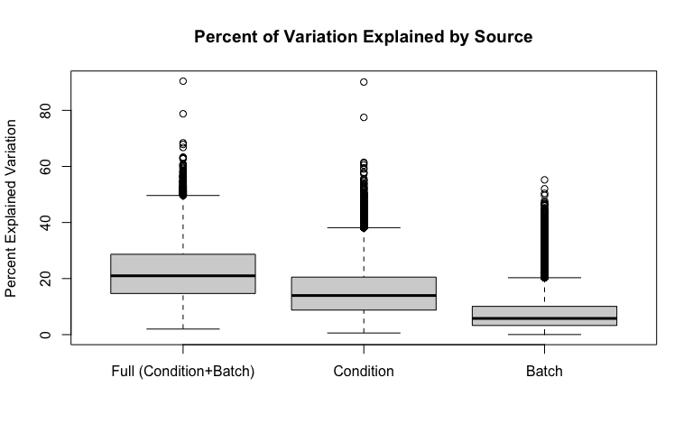
| Full (Condition+Batch) | Condition | Batch | |
|---|---|---|---|
| Min. | 1.99 | 0.58 | 0.033 |
| 1st Qu. | 14.68 | 8.758 | 3.261 |
| Median | 20.98 | 13.95 | 5.781 |
| Mean | 22.29 | 15.54 | 7.759 |
| 3rd Qu. | 28.67 | 20.52 | 10.08 |
| Max. | 90.42 | 90.12 | 55.22 |
| Min. | 1st Qu. | Median | Mean | 3rd Qu. | Max. | Ps<0.05 | |
|---|---|---|---|---|---|---|---|
| Batch P-values | 6.653e-12 | 0.09033 | 0.3622 | 0.4001 | 0.6782 | 1 | 0.1955 |
| Condition P-values | 0 | 0.01586 | 0.1304 | 0.2556 | 0.4391 | 0.9998 | 0.3646 |
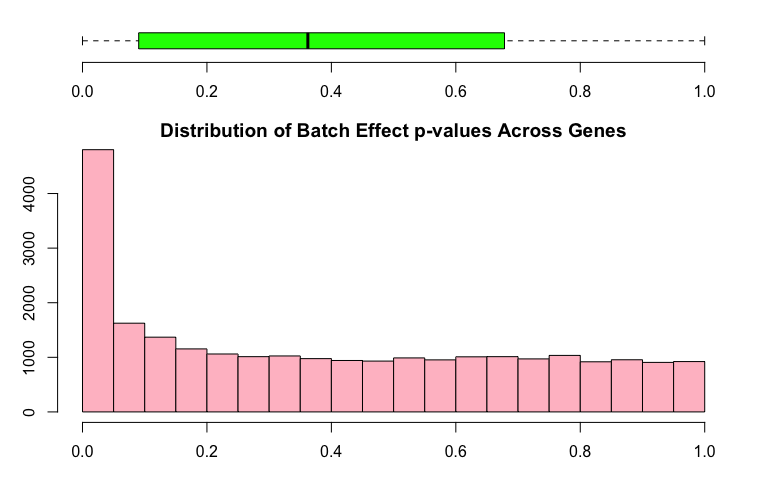
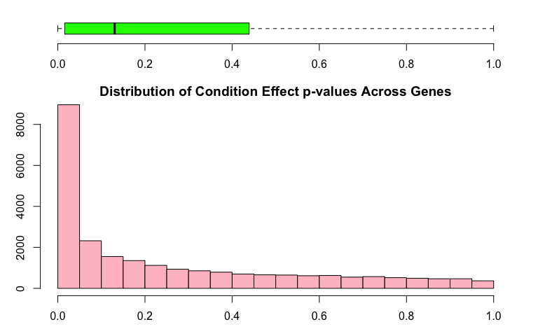
Boxplots for all values for each of the samples and are colored by batch membership.
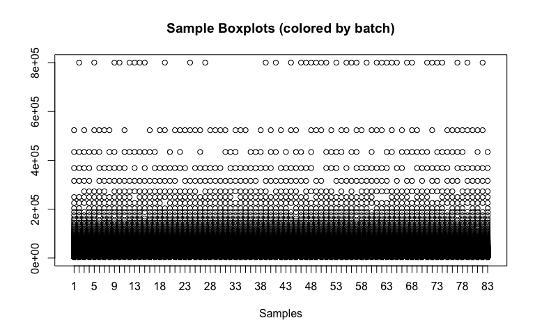
| Condition: NegativeNegativePositive (logFC) | Condition: NegativePositiveNegative (logFC) | Condition: NegativePositivePositive (logFC) | Condition: PositiveNegativeNegative (logFC) | |
|---|---|---|---|---|
| 19814 | -25.7 | 19.04 | 32.44 | -67.03 |
| 14947 | -25.63 | -26.09 | -28.11 | 19.66 |
| 7934 | 265665 | 3453 | 128353 | 160.9 |
| 7936 | 7513 | 46.9 | 3721 | -34.22 |
| 3013 | 8.804 | 17.72 | 58.24 | 50.29 |
| 7935 | 27042 | 94.57 | 13446 | 297.8 |
| 22498 | 634.8 | -18.48 | 537.7 | 1222 |
| 6299 | 15699 | 283.6 | 14984 | -461.3 |
| 17681 | 13.33 | 1.577 | 19.36 | 15.79 |
| 10274 | 4867 | 102.4 | 4128 | -1243 |
| Condition: PositiveNegativePositive (logFC) | Condition: PositivePositiveNegative (logFC) | Condition: PositivePositivePositive (logFC) | AveExpr | F | |
|---|---|---|---|---|---|
| 19814 | 7428 | -19.1 | -75.98 | 195.6 | 94.96 |
| 14947 | 660.3 | -24.55 | 3.124 | 29.88 | 37.25 |
| 7934 | 27818 | 7619 | 173803 | 55050 | 17.36 |
| 7936 | 727.8 | 131.3 | 6081 | 1890 | 17 |
| 3013 | 362 | 10.85 | -21.77 | 79.49 | 16.53 |
| 7935 | 2984 | 269.6 | 12174 | 5426 | 15.17 |
| 22498 | 395.2 | 958.7 | 5627 | 2088 | 13.76 |
| 6299 | 2105 | 179 | 14200 | 5139 | 13.56 |
| 17681 | 3.467 | 28.42 | 99.81 | 32.27 | 13.08 |
| 10274 | 817.1 | 33.96 | 5431 | 1508 | 12.54 |
| P.Value | adj.P.Val | |
|---|---|---|
| 19814 | 1.295e-33 | 3.181e-29 |
| 14947 | 2.062e-21 | 2.533e-17 |
| 7934 | 3.25e-13 | 2.662e-09 |
| 7936 | 5.101e-13 | 3.133e-09 |
| 3013 | 9.325e-13 | 4.582e-09 |
| 7935 | 5.505e-12 | 2.254e-08 |
| 22498 | 3.891e-11 | 1.366e-07 |
| 6299 | 5.149e-11 | 1.581e-07 |
| 17681 | 1.022e-10 | 2.79e-07 |
| 10274 | 2.257e-10 | 5.546e-07 |
This plot helps identify outlying samples. 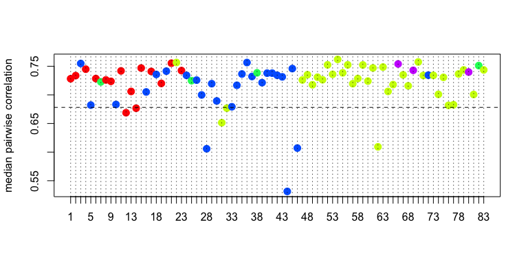
This is a heatmap of the given data matrix showing the batch effects and variations with different conditions. 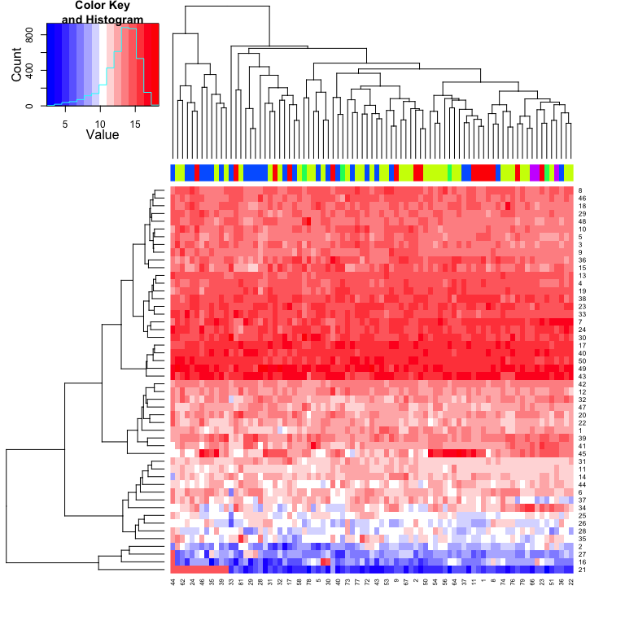
This is a heatmap of the correlation between samples. 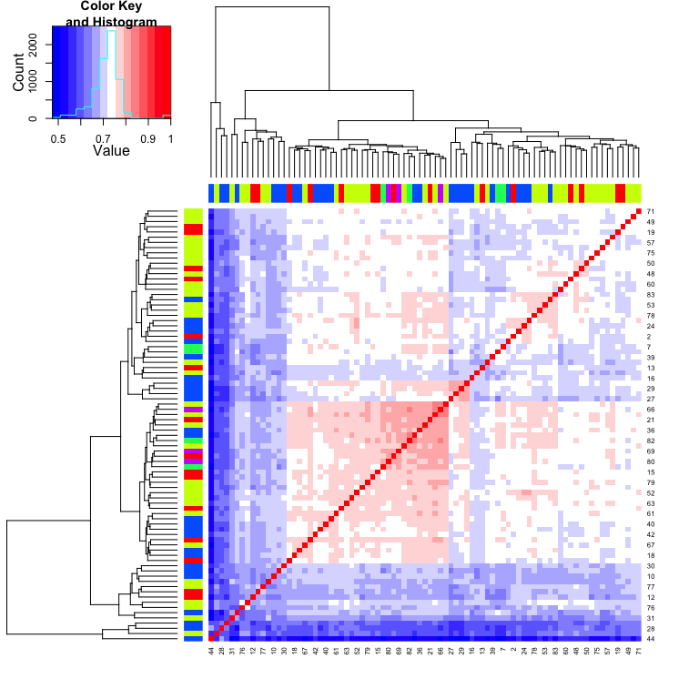
This is a Circular Dendrogram of the given data matrix colored by batch to show the batch effects. 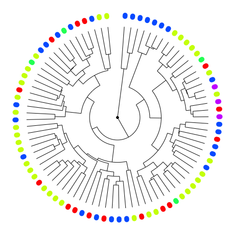
This is a plot of the top two principal components colored by batch to show the batch effects. 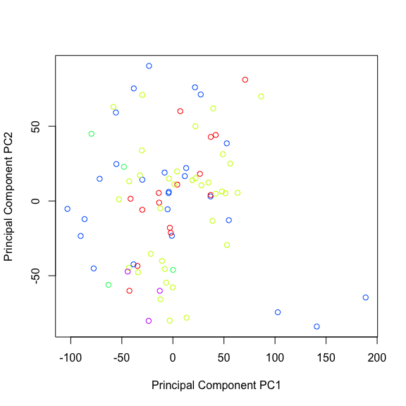
| Proportion of Variance (%) | Cumulative Proportion of Variance (%) | Percent Variation Explained by Either Condition or Batch | Percent Variation Explained by Condition | Condition Significance (p-value) | Percent Variation Explained by Batch | Batch Significance (p-value) | |
|---|---|---|---|---|---|---|---|
| PC1 | 10.05 | 10.05 | 26.9 | 26 | 0.01242 | 6.7 | 0.9239 |
| PC2 | 7.608 | 17.66 | 43.2 | 38.4 | 1e-05 | 9 | 0.2144 |
| PC3 | 5.908 | 23.57 | 54.5 | 42.5 | 0 | 8.6 | 0.00211 |
| PC4 | 5.377 | 28.94 | 51.4 | 25.8 | 0.00093 | 32.2 | 0 |
| PC5 | 3.415 | 32.36 | 39.8 | 36 | 4e-05 | 6.6 | 0.3636 |
| PC6 | 2.979 | 35.34 | 35.2 | 4.9 | 0.5859 | 30.1 | 1e-05 |
| PC7 | 2.714 | 38.05 | 20.2 | 5.5 | 0.4196 | 12.1 | 0.01635 |
| PC8 | 2.305 | 40.36 | 10.3 | 3.8 | 0.8148 | 5.7 | 0.2853 |
| PC9 | 2.149 | 42.51 | 16.9 | 6.9 | 0.7315 | 11.8 | 0.08556 |
| PC10 | 2.009 | 44.52 | 18.7 | 5.3 | 0.4415 | 10.7 | 0.027 |
| PC11 | 1.793 | 46.31 | 13 | 8.4 | 0.3675 | 3.5 | 0.4526 |
| PC12 | 1.729 | 48.04 | 13.5 | 7.7 | 0.4333 | 4.9 | 0.3191 |
| PC13 | 1.699 | 49.74 | 14.2 | 2.8 | 0.8978 | 10.8 | 0.06096 |
| PC14 | 1.563 | 51.3 | 17.5 | 10.7 | 0.2313 | 6.4 | 0.2247 |
| PC15 | 1.501 | 52.8 | 5.9 | 2.4 | 0.9532 | 3.1 | 0.625 |
| PC16 | 1.486 | 54.29 | 13.1 | 8.9 | 0.3626 | 3.5 | 0.4969 |
| PC17 | 1.395 | 55.68 | 7 | 3.2 | 0.9801 | 5 | 0.5817 |
| PC18 | 1.369 | 57.05 | 23 | 20.5 | 0.02827 | 4.7 | 0.6803 |
| PC19 | 1.294 | 58.34 | 18.6 | 12.4 | 0.2574 | 8.1 | 0.2611 |
| PC20 | 1.267 | 59.61 | 15.4 | 12.3 | 0.3606 | 6 | 0.6382 |
| PC21 | 1.206 | 60.82 | 18.7 | 17.9 | 0.06648 | 2.6 | 0.9578 |
| PC22 | 1.185 | 62 | 8.8 | 5.3 | 0.6359 | 2.1 | 0.6068 |
| PC23 | 1.162 | 63.16 | 11.5 | 7.6 | 0.4753 | 3.3 | 0.5398 |
| PC24 | 1.137 | 64.3 | 14.8 | 13.5 | 0.2299 | 3.2 | 0.8962 |
| PC25 | 1.113 | 65.41 | 10.8 | 8 | 0.5358 | 3.2 | 0.6882 |
| PC26 | 1.081 | 66.49 | 10.5 | 6.2 | 0.5708 | 3.2 | 0.5011 |
| PC27 | 1.041 | 67.54 | 15.2 | 8.5 | 0.3719 | 6 | 0.2431 |
| PC28 | 1.01 | 68.55 | 5.8 | 4.6 | 0.8181 | 0.9 | 0.9265 |
| PC29 | 0.9949 | 69.54 | 11.2 | 6.5 | 0.6065 | 4.3 | 0.4516 |
| PC30 | 0.9658 | 70.51 | 8.9 | 8.2 | 0.4929 | 0.6 | 0.9709 |
| PC31 | 0.9468 | 71.45 | 12.1 | 9.8 | 0.3186 | 1.7 | 0.7721 |
| PC32 | 0.9344 | 72.39 | 7.7 | 4.1 | 0.8429 | 3.3 | 0.61 |
| PC33 | 0.9281 | 73.32 | 4.8 | 3.6 | 0.9138 | 1.3 | 0.9209 |
| PC34 | 0.8935 | 74.21 | 17.6 | 13.7 | 0.1621 | 5 | 0.5038 |
| PC35 | 0.8785 | 75.09 | 11.1 | 8.5 | 0.4086 | 2 | 0.7094 |
| PC36 | 0.8702 | 75.96 | 21.2 | 17.2 | 0.0334 | 3 | 0.4704 |
| PC37 | 0.8484 | 76.81 | 5.7 | 5.4 | 0.7813 | 0.4 | 0.9955 |
| PC38 | 0.8269 | 77.63 | 5.7 | 3.6 | 0.9064 | 2.1 | 0.8175 |
| PC39 | 0.8146 | 78.45 | 8 | 6.8 | 0.6618 | 1.5 | 0.926 |
| PC40 | 0.8049 | 79.25 | 12.5 | 7.5 | 0.4143 | 3.6 | 0.4048 |
| PC41 | 0.7975 | 80.05 | 9.2 | 6 | 0.5531 | 1.7 | 0.6347 |
| PC42 | 0.7581 | 80.81 | 8.4 | 4.5 | 0.8221 | 3.7 | 0.5636 |
| PC43 | 0.7413 | 81.55 | 16.4 | 8.7 | 0.2239 | 5 | 0.1747 |
| PC44 | 0.7326 | 82.28 | 7.8 | 5.8 | 0.7555 | 2.4 | 0.817 |
| PC45 | 0.7239 | 83.01 | 9.1 | 8 | 0.5136 | 1 | 0.9297 |
| PC46 | 0.7132 | 83.72 | 6.1 | 4.9 | 0.7778 | 0.9 | 0.9178 |
| PC47 | 0.6887 | 84.41 | 7.5 | 5.9 | 0.6986 | 1.5 | 0.8609 |
| PC48 | 0.6832 | 85.09 | 18 | 10.4 | 0.3996 | 9.4 | 0.1746 |
| PC49 | 0.6678 | 85.76 | 6.5 | 1.9 | 0.8945 | 2.8 | 0.4802 |
| PC50 | 0.6522 | 86.41 | 4.7 | 3.7 | 0.895 | 0.8 | 0.9446 |
| PC51 | 0.6341 | 87.04 | 9 | 5.8 | 0.5735 | 1.7 | 0.6377 |
| PC52 | 0.6108 | 87.66 | 17.5 | 10.4 | 0.2892 | 7.3 | 0.204 |
| PC53 | 0.5947 | 88.25 | 9.9 | 5.3 | 0.8477 | 5.6 | 0.4753 |
| PC54 | 0.5716 | 88.82 | 14.4 | 12 | 0.2289 | 2.8 | 0.742 |
| PC55 | 0.5651 | 89.39 | 15.7 | 8.6 | 0.329 | 6 | 0.2112 |
| PC56 | 0.5478 | 89.93 | 8.7 | 8.1 | 0.619 | 1.8 | 0.9743 |
| PC57 | 0.5418 | 90.48 | 7 | 4.3 | 0.7685 | 1.7 | 0.7145 |
| PC58 | 0.5354 | 91.01 | 11.3 | 4.7 | 0.7947 | 6.5 | 0.2693 |
| PC59 | 0.5215 | 91.53 | 4.7 | 4.2 | 0.9031 | 1 | 0.9879 |
| PC60 | 0.5047 | 92.04 | 14.2 | 10.2 | 0.3905 | 5.1 | 0.5057 |
| PC61 | 0.4908 | 92.53 | 6.5 | 4.8 | 0.9416 | 3.5 | 0.8654 |
| PC62 | 0.4804 | 93.01 | 9.2 | 5.9 | 0.732 | 3.6 | 0.6267 |
| PC63 | 0.4681 | 93.48 | 12.1 | 7 | 0.557 | 4.8 | 0.3909 |
| PC64 | 0.4528 | 93.93 | 3.4 | 1.4 | 0.9957 | 2.2 | 0.8224 |
| PC65 | 0.4454 | 94.38 | 3.8 | 2.1 | 0.9905 | 2.2 | 0.8623 |
| PC66 | 0.4326 | 94.81 | 9.8 | 6.5 | 0.6128 | 3 | 0.628 |
| PC67 | 0.4204 | 95.23 | 6.5 | 5.4 | 0.8005 | 1.5 | 0.9291 |
| PC68 | 0.4144 | 95.64 | 11.3 | 7.1 | 0.5206 | 3.6 | 0.5069 |
| PC69 | 0.4105 | 96.05 | 6.9 | 2.6 | 0.9112 | 3.4 | 0.5236 |
| PC70 | 0.3807 | 96.43 | 11.4 | 3.6 | 0.8704 | 7.5 | 0.1917 |
| PC71 | 0.3598 | 96.79 | 7.2 | 2.7 | 0.9486 | 4.4 | 0.4842 |
| PC72 | 0.3493 | 97.14 | 24.4 | 14.4 | 0.0909 | 10.6 | 0.06326 |
| PC73 | 0.3368 | 97.48 | 6.8 | 5.9 | 0.6598 | 0.3 | 0.9457 |
| PC74 | 0.3292 | 97.81 | 8.4 | 1 | 0.9931 | 7 | 0.2295 |
| PC75 | 0.3223 | 98.13 | 11.7 | 7.2 | 0.4259 | 2.8 | 0.4671 |
| PC76 | 0.3067 | 98.44 | 23.7 | 16.3 | 0.01384 | 3.1 | 0.1498 |
| PC77 | 0.2875 | 98.73 | 6.8 | 5.7 | 0.7591 | 1.4 | 0.9304 |
| PC78 | 0.2797 | 99.01 | 4.3 | 1.2 | 0.9922 | 2.8 | 0.6817 |
| PC79 | 0.2735 | 99.28 | 6.5 | 3.9 | 0.8447 | 2.1 | 0.7402 |
| PC80 | 0.2596 | 99.54 | 15.1 | 8.9 | 0.3285 | 5.3 | 0.2838 |
| PC81 | 0.2418 | 99.78 | 9.8 | 0.6 | 0.987 | 8.1 | 0.1357 |
| PC82 | 0.2196 | 100 | 7.4 | 1.4 | 0.9842 | 5.5 | 0.3402 |
| PC83 | 1.46e-29 | 100 | 17.4 | 15 | 0.1008 | 2.8 | 0.7163 |
This is a heatmap plot showing the variation of gene expression mean, variance, skewness and kurtosis between samples grouped by batch to see the batch effects variation 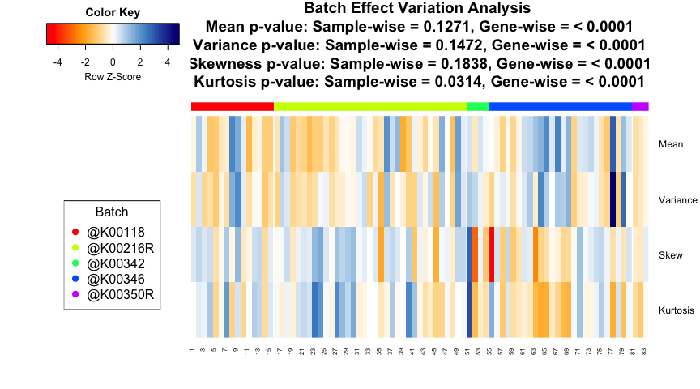
## Note: Sample-wise p-value is calculated for the variation across samples on the measure across genes. Gene-wise p-value is calculated for the variation of each gene between batches on the measure across each batch. If the data is quantum normalized, then the Sample-wise measure across genes is same for all samples and Gene-wise p-value is a good measure.This is a plot showing whether parametric or non-parameteric prior is appropriate for this data. It also shows the Kolmogorov-Smirnov test comparing the parametric and non-parameteric prior distribution.
## Found 5 batches
## Adjusting for 7 covariate(s) or covariate level(s)
## Standardizing Data across genes
## Fitting L/S model and finding priors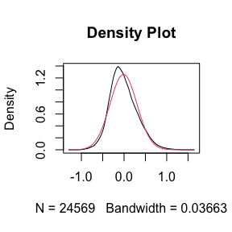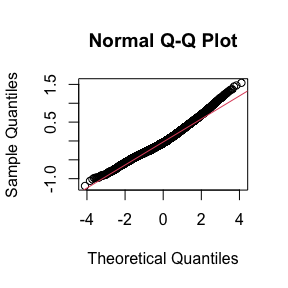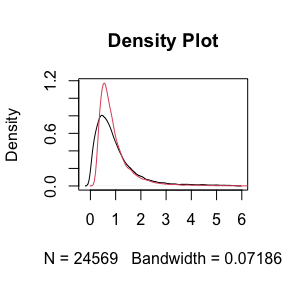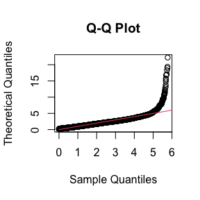
## Batch mean distribution across genes: Normal vs Empirical distribution
## Two-sided Kolmogorov-Smirnov test
## Selected Batch: 1
## Statistic D = 0.04469
## p-value = 0
##
##
## Batch Variance distribution across genes: Inverse Gamma vs Empirical distribution
## Two-sided Kolmogorov-Smirnov test
## Selected Batch: 1
## Statistic D = 0.1285
## p-value = 0Note: The non-parametric version of ComBat takes much longer time to run and we recommend it only when the shape of the non-parametric curve widely differs such as a bimodal or highly skewed distribution. Otherwise, the difference in batch adjustment is very negligible and parametric version is recommended even if p-value of KS test above is significant.## Number of Surrogate Variables found in the given data: 1